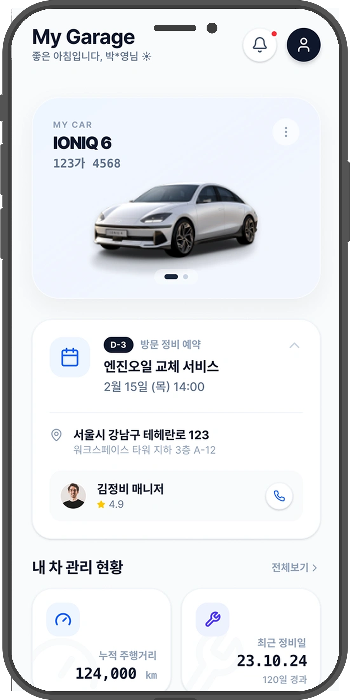

CLIENT
AJ Maintenance
저렴함을, 신뢰감으로.
A home-visit car repair service. I unified its UX, design system, and ad creative into one tone — turning a “cheap-looking app” into a service worth trusting.
커뮤니티 인기글이 점유하던 홈을 차량 관리 대시보드로 바꿨다. My Garage와 다가오는 예약을 최상단으로.

“차계부가 어디 있는지 모르겠다”는 기능 부족이 아니라 구조 문제였다. 더보기 15 → 8로 줄이고 재배치.
차량관리·더보기에 중복되던 진입로를 차량관리로 일원화.
예약을 정식 탭으로 신설 — 다가오는·지난 예약을 한곳에서.
홈 상설 배너 + 이벤트 허브로 흩어진 이벤트·초대를 통합.
더 많은 컴포넌트가 아니라 더 적은 변형이 답이었다. 버튼 3종·배지로 변형을 제한하고 iOS·Android를 통일.
→ 같은 토큰, 같은 컴포넌트. 내부 테스트의 ‘부실해 보인다’ 반응이 사라졌다 — 신뢰는 일관성에서.
서비스부터 광고까지 같은 톤으로. 이벤트를 템플릿으로 시스템화해 빠르게 실험했다 — 8개월 4,027건 · CPI −63%.